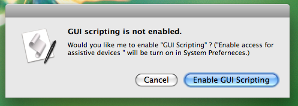

GUIScriptingChecker is an AppleScript module to check availability of "GUI Scripting". Also if "GUI Scripting" is not enabled, GUIScriptingChecker can enable "GUI Scripting" with displaying proper messages.
The default statsu is "GUI Scripting" is OFF. Therefore you should check availability of "GUI Scriting" at the beginning of the script which depends on "GUI Scripting".
"GUIScriptingChecker" take on boring routine task, and display the following dialog if "GUI Scripting" is not enabled.

If a user pushes "Enable GUI Scripting" button, GUIScriptingChecker try to enable "GUI Scripting". If "GUI Scripting" is enabled through authorization process, a script can contiue to work.
Messages are displayed when "GUI Scripting" is OFF can be localized by giving a delegate to "GUIScriptingChecker" as follows.
Also "localize_message()" allow to obtain strings from "Localizable.strings" file in the current bundle like usual Mac OS X applications. Following Mac OS X's manners is better way to localize an application.